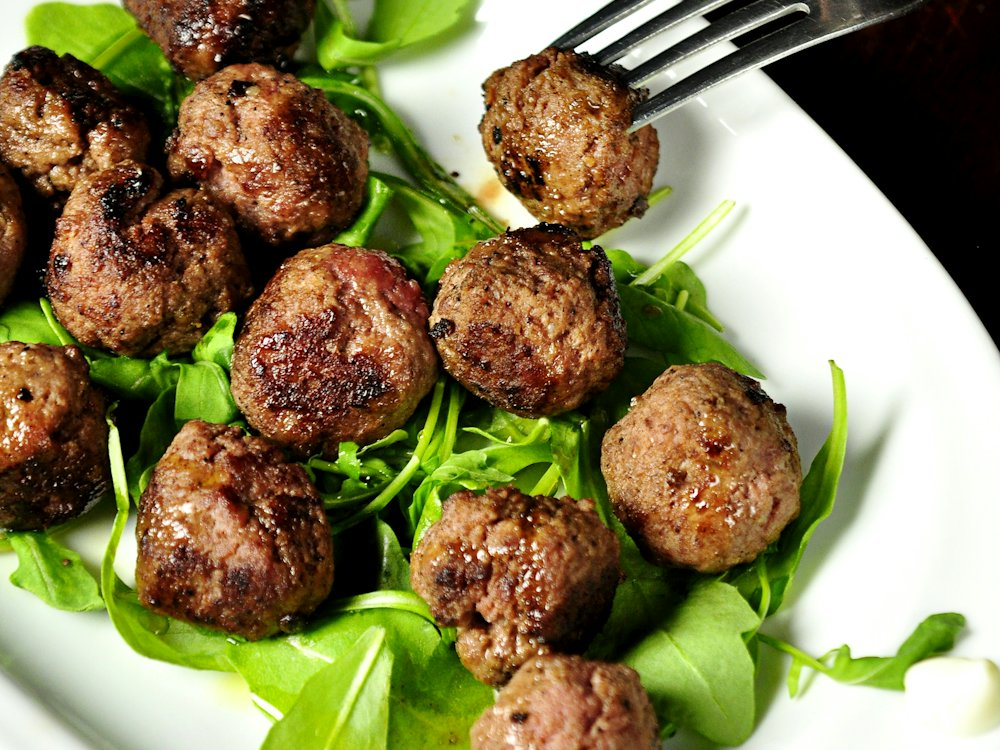

Paulaner Bräuhaus
Бар · Немецкая · Алматы
Рейтинг 2ГИС
★ 4.9
4 949 оценок
Год открытия
2021
открылся в сентябре 2021 г.
Средний чек
≈7 000 ₸
оценка по типу заведения
Адрес и часы
📍 ул. Муканова, 190, Алматы · Алмалинский район
🕒 часы работы уточняются — смотрите в 2ГИС
Удобства
О заведении
Баварский ресторан-пивоварня. «Лучший бар 2025» по версии 2ГИС.
Меню
Рядом в справочнике
Paco coffee & pastry · Palomar · Paul · Pelmen · Perla di Roma · Petit chocolate & coffee